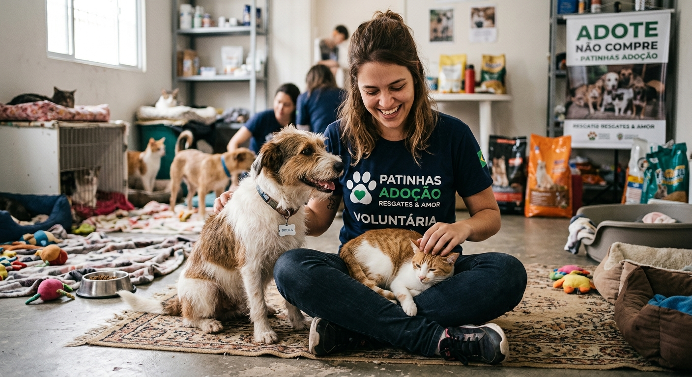

Quem são os animais que esperam por você
Nas ruas de São Paulo, SP, cães e gatos são deixados à própria sorte todos os dias. Muitos chegam até nós machucados, com medo e sem confiar em ninguém. A Patinhas Adoção acolhe cada um deles, garantindo abrigo seguro, alimentação e atendimento veterinário até que encontrem uma família.
Por trás de cada resgate existe uma história de superação.
Você pode ser quem vai escrever o próximo capítulo.
Como acolhemos cada animal

Venha fazer parte dessa causa
Adote, seja voluntário ou contribua com uma doação. Cada gesto, por menor que pareça, transforma a vida de um animal.
Fale com a gente
Patinhas Adoção
Endereço: Rua das Palmeiras, 120 – São Paulo, SP
Telefone: (11) 91234-5678
E-mail: contato@patinhasadocao.org.br